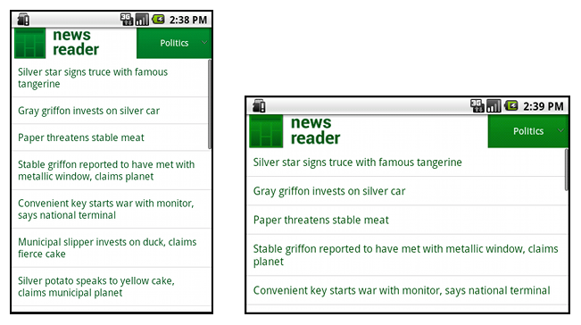

このレッスンでの学習内容
- 「wrap_content」と「match_parent」を使用する
- RelativeLayout を使用する
- サイズ修飾子を使用する
- 最小幅修飾子を使用する
- レイアウト エイリアスを使用する
- 画面の向きの修飾子を使用する
- ナインパッチ ビットマップを使用する
関連ドキュメント
試してみる
NewsReader.zip
このレッスンでは、異なる画面サイズを以下のような方法でサポートする方法について学習します:
- 画面に収まるようにレイアウト サイズを適切に変更する
- 画面設定に基づいて適切な UI レイアウトを表示する
- 適切な画面に適切なレイアウトを適用する
- 適切にサイズ調整したビットマップを表示する
「wrap_content」と「match_parent」を使用する
レイアウトをさまざまな画面サイズに柔軟に対応させるには、一部のビュー コンポーネントの幅と高さに "wrap_content" と "match_parent" を使用する必要があります。"wrap_content" を使用すると、ビューの幅や高さがそのビュー内にコンテンツが収まるのに必要な最小サイズに設定されます。一方、"match_parent"（API レベル 8 より前の名称は "fill_parent"）を使用すると、コンポーネントがその親ビューのサイズに一致するまで拡大されます。
ハードコーディングされたサイズの代わりに "wrap_content" と "match_parent" を使用することで、ビューはそれぞれ、そのビューに必要なスペースだけを使用したり、空きスペースを埋めるまで拡大したりします。次に例を示します:
<LinearLayout xmlns:android="http://schemas.android.com/apk/res/android"
android:orientation="vertical"
android:layout_width="match_parent"
android:layout_height="match_parent">
<LinearLayout android:layout_width="match_parent"
android:id="@+id/linearLayout1"
android:gravity="center"
android:layout_height="50dp">
<ImageView android:id="@+id/imageView1"
android:layout_height="wrap_content"
android:layout_width="wrap_content"
android:src="@drawable/logo"
android:paddingRight="30dp"
android:layout_gravity="left"
android:layout_weight="0" />
<View android:layout_height="wrap_content"
android:id="@+id/view1"
android:layout_width="wrap_content"
android:layout_weight="1" />
<Button android:id="@+id/categorybutton"
android:background="@drawable/button_bg"
android:layout_height="match_parent"
android:layout_weight="0"
android:layout_width="120dp"
style="@style/CategoryButtonStyle"/>
</LinearLayout>
<fragment android:id="@+id/headlines"
android:layout_height="fill_parent"
android:name="com.example.android.newsreader.HeadlinesFragment"
android:layout_width="match_parent" />
</LinearLayout>
このサンプルでは、特定のサイズではない "wrap_content" と "match_parent" をコンポーネント サイズにどのように使用しているかに注目してください。こうすることで、異なる画面のサイズと向きにレイアウトを正しく対応させることができます。
たとえば、このレイアウトを縦表示と横表示で表示したときの見え方を以下に示します。コンポーネントのサイズが幅と高さに自動的に適合している点に注目してください:
図 1. News Reader サンプル アプリの縦表示（左）と横表示（右）
RelativeLayout を使用する
ネストされた LinearLayout インスタンスや、"wrap_content" と "match_parent" のサイズの組み合わせを使用すると、かなり複雑なレイアウトを作成できます。しかし、 LinearLayoutLinearLayout のビューは、RelativeLayout
次に例を示します:
<?xml version="1.0" encoding="utf-8"?>
<RelativeLayout xmlns:android="http://schemas.android.com/apk/res/android"
android:layout_width="match_parent"
android:layout_height="match_parent">
<TextView
android:id="@+id/label"
android:layout_width="match_parent"
android:layout_height="wrap_content"
android:text="Type here:"/>
<EditText
android:id="@+id/entry"
android:layout_width="match_parent"
android:layout_height="wrap_content"
android:layout_below="@id/label"/>
<Button
android:id="@+id/ok"
android:layout_width="wrap_content"
android:layout_height="wrap_content"
android:layout_below="@id/entry"
android:layout_alignParentRight="true"
android:layout_marginLeft="10dp"
android:text="OK" />
<Button
android:layout_width="wrap_content"
android:layout_height="wrap_content"
android:layout_toLeftOf="@id/ok"
android:layout_alignTop="@id/ok"
android:text="Cancel" />
</RelativeLayout>
図 2 は、このレイアウトの QVGA 画面での見え方を示しています。

図 2. QVGA 画面（スモール画面）のスクリーンショット
図 3 は、このレイアウトのラージ画面での見え方を示しています。

図 3. WSVGA 画面（ラージ画面）のスクリーンショット
コンポーネントのサイズが変更されても、 RelativeLayout.LayoutParams
サイズ修飾子を使用する
柔軟なレイアウトや相対的なレイアウトから得られる恩恵は、前のセクションで説明したことくらいです。これらのレイアウトはコンポーネントの内部や周囲のスペースを引き延ばすことでさまざまな画面に対応しますが、それぞれの画面サイズに合った最高のユーザー エクスペリエンスを実現していない可能性があります。したがって、アプリでは、柔軟なレイアウトの実装だけではなく、さまざまな画面設定に合わせた複数の代替レイアウトも必要になります。これは、設定修飾子を使用することで実現可能です。設定修飾子により、ランタイムが現在のデバイスの設定に基づいて適切なリソース（画面サイズ別のレイアウト デザインなど）を自動的に選択できます。
たとえば、多くのアプリでは、ラージ画面用に「2 ペイン」パターンを実装しています（一方のペインに項目リスト、もう一方のペインにそのコンテンツを表示することが可能です）。タブレットやテレビは両方のペインを同時に表示できるほど十分に大きい画面ですが、携帯端末の画面では 2 つのペインを別々に表示する必要があります。そのようなレイアウトを実装するには、次のようなファイルが必要になります:
res/layout/main.xml、シングルペイン（デフォルト）レイアウト:<LinearLayout xmlns:android="http://schemas.android.com/apk/res/android" android:orientation="vertical" android:layout_width="match_parent" android:layout_height="match_parent"> <fragment android:id="@+id/headlines" android:layout_height="fill_parent" android:name="com.example.android.newsreader.HeadlinesFragment" android:layout_width="match_parent" /> </LinearLayout>res/layout-large/main.xml、2 ペイン レイアウト:<LinearLayout xmlns:android="http://schemas.android.com/apk/res/android" android:layout_width="fill_parent" android:layout_height="fill_parent" android:orientation="horizontal"> <fragment android:id="@+id/headlines" android:layout_height="fill_parent" android:name="com.example.android.newsreader.HeadlinesFragment" android:layout_width="400dp" android:layout_marginRight="10dp"/> <fragment android:id="@+id/article" android:layout_height="fill_parent" android:name="com.example.android.newsreader.ArticleFragment" android:layout_width="fill_parent" /> </LinearLayout>
2 番目のレイアウトのディレクトリ名の large 修飾子に注目してください。このレイアウトは、ラージ（7 インチ以上のタブレットなど）と分類された画面のデバイスで選択されます。それよりも小さいデバイスでは、その他のレイアウト（修飾子なし）が選択されます。
最小幅修飾子を使用する
Android 3.2 未満のデバイスでデベロッパーが抱えていた問題の 1 つに、Dell Streak、初代 Galaxy Tab、7 インチ タブレット全般を含む、「ラージ」画面サイズの分類があります。しかし、多くのアプリでは、すべて「ラージ」画面と見なされたとしても、このカテゴリ内のデバイスのサイズに合わせて異なるレイアウト（5 インチと 7 インチのデバイス用など）を表示したい場合があります。そこで、Android 3.2 では「最小幅」修飾子などが導入されました。
最小幅修飾子を使用すると、dp で指定した特定の最小幅の画面を対象とすることができます。たとえば、一般的な 7 インチ タブレットは最小幅が 600 dp なので、これらの画面の UI で 2 つのペイン（ただし、それよりも小さい画面ではシングル リスト）を表示したい場合は、前のセクションで説明した 2 つのレイアウトをシングルペイン レイアウト用と 2 ペイン レイアウト用としてそのまま利用できます。ただし、large サイズ修飾子の代わりに、sw600dp を使用して、最小幅が 600 dp の画面では 2 ペイン レイアウトになるよう指定します:
res/layout/main.xml、シングルペイン（デフォルト）レイアウト:<LinearLayout xmlns:android="http://schemas.android.com/apk/res/android" android:orientation="vertical" android:layout_width="match_parent" android:layout_height="match_parent"> <fragment android:id="@+id/headlines" android:layout_height="fill_parent" android:name="com.example.android.newsreader.HeadlinesFragment" android:layout_width="match_parent" /> </LinearLayout>res/layout-sw600dp/main.xml、2 ペイン レイアウト:<LinearLayout xmlns:android="http://schemas.android.com/apk/res/android" android:layout_width="fill_parent" android:layout_height="fill_parent" android:orientation="horizontal"> <fragment android:id="@+id/headlines" android:layout_height="fill_parent" android:name="com.example.android.newsreader.HeadlinesFragment" android:layout_width="400dp" android:layout_marginRight="10dp"/> <fragment android:id="@+id/article" android:layout_height="fill_parent" android:name="com.example.android.newsreader.ArticleFragment" android:layout_width="fill_parent" /> </LinearLayout>
つまり、最小幅が 600dp 以上のデバイスでは layout-sw600dp/main.xml（2 ペイン）レイアウトが選択され、それよりも小さい画面では layout/main.xml（シングルペイン）レイアウトが選択されるということです。
ただし、Android 3.2 未満のデバイスではこの修飾子は機能しません。これは sw600dp をサイズ修飾子として認識できないためです。したがって、引き続き large 修飾子も使用する必要があります。そこで、res/layout-sw600dp/main.xml と同じ内容の res/layout-large/main.xml という名前のファイルも必要になります。次のセクションでは、このようにレイアウト ファイルの重複を避けるためのテクニックについて学習します。
レイアウト エイリアスを使用する
最小幅修飾子は、Android 3.2 以上でしか利用できません。したがって、旧バージョンとの互換性を維持するために、あいまいなサイズ分類（small、normal、large、xlarge）も併用することが必要です。たとえば、携帯端末ではシングルペイン UI、7 インチ タブレットやテレビなどの大きなデバイスではマルチペイン UI を表示するよう UI を設計する場合、以下のようなファイルが必要になります:
res/layout/main.xml:シングルペイン レイアウトres/layout-large:マルチペイン レイアウトres/layout-sw600dp:マルチペイン レイアウト
最後の 2 つのファイルは同じものです。一方は Android 3.2 デバイス用で、もう一方は旧バージョンの Android を搭載したタブレットとテレビ用です。
このようにタブレット/テレビ用として同じファイルを使用することで起こる重複（さらに、その結果メンテナンスが困難になる状況）を避けるために、エイリアス ファイルを使用できます。たとえば、次のようなレイアウトを定義できます:
res/layout/main.xml、シングルペイン レイアウトres/layout/main_twopanes.xml、2 ペイン レイアウト
さらに、次の 2 つのファイルを追加します:
res/values-large/layout.xml:<resources> <item name="main" type="layout">@layout/main_twopanes</item> </resources>res/values-sw600dp/layout.xml:<resources> <item name="main" type="layout">@layout/main_twopanes</item> </resources>
最後の 2 つのファイルの内容は同じですが、実際のレイアウトは定義していません。これらのファイルは、単に mainmain_twopaneslarge と sw600dp セレクタが含まれているので、Android のバージョンに関係なく（
large に一致し、sw600dp に一致します）タブレット/テレビに適用されます。
画面の向きの修飾子を使用する
横表示と縦表示が両方とも正しく表示されるレイアウトもありますが、ほとんどのレイアウトは調整が必要になります。以下に、News Reader サンプル アプリの各画面のサイズと向きでレイアウトがどのように表示されるかを示します:
- スモール画面、縦表示: シングル ペイン、ロゴ付き
- スモール画面、横表示: シングル ペイン、ロゴ付き
- 7 インチ タブレット、縦表示: シングル ペイン、アクション バー付き
- 7 インチ タブレット、横表示: デュアル ペイン、ワイド、アクション バー付き
- 10 インチ タブレット、縦表示: デュアル ペイン、ナロー、アクション バー付き
- 10 インチ タブレット、横表示: デュアル ペイン、ワイド、アクション バー付き
- テレビ、横表示: デュアル ペイン、ワイド、アクション バー付き
これらの各レイアウトは、res/layout/ ディレクトリ内の XML ファイルに定義されています。各レイアウトをさまざまな画面設定に割り当てるには、アプリでレイアウト エイリアスを使用して、各設定に対応付けます:
res/layout/onepane.xml:
<LinearLayout xmlns:android="http://schemas.android.com/apk/res/android"
android:orientation="vertical"
android:layout_width="match_parent"
android:layout_height="match_parent">
<fragment android:id="@+id/headlines"
android:layout_height="fill_parent"
android:name="com.example.android.newsreader.HeadlinesFragment"
android:layout_width="match_parent" />
</LinearLayout>
res/layout/onepane_with_bar.xml:
<LinearLayout xmlns:android="http://schemas.android.com/apk/res/android"
android:orientation="vertical"
android:layout_width="match_parent"
android:layout_height="match_parent">
<LinearLayout android:layout_width="match_parent"
android:id="@+id/linearLayout1"
android:gravity="center"
android:layout_height="50dp">
<ImageView android:id="@+id/imageView1"
android:layout_height="wrap_content"
android:layout_width="wrap_content"
android:src="@drawable/logo"
android:paddingRight="30dp"
android:layout_gravity="left"
android:layout_weight="0" />
<View android:layout_height="wrap_content"
android:id="@+id/view1"
android:layout_width="wrap_content"
android:layout_weight="1" />
<Button android:id="@+id/categorybutton"
android:background="@drawable/button_bg"
android:layout_height="match_parent"
android:layout_weight="0"
android:layout_width="120dp"
style="@style/CategoryButtonStyle"/>
</LinearLayout>
<fragment android:id="@+id/headlines"
android:layout_height="fill_parent"
android:name="com.example.android.newsreader.HeadlinesFragment"
android:layout_width="match_parent" />
</LinearLayout>
res/layout/twopanes.xml:
<LinearLayout xmlns:android="http://schemas.android.com/apk/res/android"
android:layout_width="fill_parent"
android:layout_height="fill_parent"
android:orientation="horizontal">
<fragment android:id="@+id/headlines"
android:layout_height="fill_parent"
android:name="com.example.android.newsreader.HeadlinesFragment"
android:layout_width="400dp"
android:layout_marginRight="10dp"/>
<fragment android:id="@+id/article"
android:layout_height="fill_parent"
android:name="com.example.android.newsreader.ArticleFragment"
android:layout_width="fill_parent" />
</LinearLayout>
res/layout/twopanes_narrow.xml:
<LinearLayout xmlns:android="http://schemas.android.com/apk/res/android"
android:layout_width="fill_parent"
android:layout_height="fill_parent"
android:orientation="horizontal">
<fragment android:id="@+id/headlines"
android:layout_height="fill_parent"
android:name="com.example.android.newsreader.HeadlinesFragment"
android:layout_width="200dp"
android:layout_marginRight="10dp"/>
<fragment android:id="@+id/article"
android:layout_height="fill_parent"
android:name="com.example.android.newsreader.ArticleFragment"
android:layout_width="fill_parent" />
</LinearLayout>
これで、考えられるすべてのレイアウトが定義されました。あとは、設定修飾子を使用して、適切なレイアウトを各設定にマッピングするだけです。そのためには、以下のようなレイアウト エイリアス テクニックを使用することができます:
res/values/layouts.xml:
<resources>
<item name="main_layout" type="layout">@layout/onepane_with_bar</item>
<bool name="has_two_panes">false</bool>
</resources>
res/values-sw600dp-land/layouts.xml:
<resources>
<item name="main_layout" type="layout">@layout/twopanes</item>
<bool name="has_two_panes">true</bool>
</resources>
res/values-sw600dp-port/layouts.xml:
<resources>
<item name="main_layout" type="layout">@layout/onepane</item>
<bool name="has_two_panes">false</bool>
</resources>
res/values-large-land/layouts.xml:
<resources>
<item name="main_layout" type="layout">@layout/twopanes</item>
<bool name="has_two_panes">true</bool>
</resources>
res/values-large-port/layouts.xml:
<resources>
<item name="main_layout" type="layout">@layout/twopanes_narrow</item>
<bool name="has_two_panes">true</bool>
</resources>
ナインパッチ ビットマップを使用する
異なる画面サイズをサポートするには、画像リソースも異なるサイズに対応できないといけません。たとえば、ボタンの背景は、適用されるボタンの形状が異なってもサイズが合わなければいけません。
サイズ変更可能なコンポーネントでシンプルな画像を使用すると、ランタイムによって画像が一様に拡大縮小されるので、いくぶん期待はずれの結果になることがすぐにわかります。これは、ナインパッチ ビットマップを使用することで解決します。ナインパッチ ビットマップとは、拡大可能な領域と拡大不可能な領域が指定された特殊なフォーマットの PNG ファイルです。
そのため、サイズが変化するコンポーネントで使用するビットマップをデザインする場合は、常にナインパッチを使用してください。ビットマップをナインパッチに変換するには、まず、通常の画像を用意します（図 4: わかりやすく 4 倍に拡大しています）。

図 4. button.png
次に、 draw9patch ユーティリティ（tools/ ディレクトリにあります）からナインパッチを実行して、左境界線と上境界線上にピクセル（ドット）を描くことで拡大する領域にマークを付けます。また、右境界線と下境界線上にピクセルを描くことで、コンテンツを入れる領域をマークできます（図 5）。

図 5. button.9.png
境界線上に黒いピクセルがあることに注目してください。左境界線と上境界線上のものは画像を拡大できる領域で、右境界線と下境界線上のものはコンテンツを配置する領域を示しています。
さらに、.9.png という拡張子にも注目してください。この拡張子は必ず使用してください。そうすることで、通常の PNG 画像ではなく、ナインパッチ画像であることがフレームワークによって検出されます。
この背景を（android:background="@drawable/button" を設定して）コンポーネントに適用すると、ボタンのサイズに合わせて適切に画像が拡大します（図 6 のさまざまなサイズを参照）。

図 6button.9.png ナインパッチを使用したさまざまなサイズのボタン